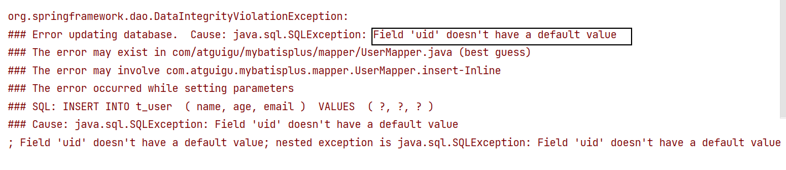

# 一、Mybatis-Plus 简介
# 1. 简介
Mybatis-Plus (简称 MP) 是一个 Mybatis 的增强工具，在 Mybatis 的基础上只做增强不做改变，为简化开发，提升效率而生
# 2. 特性
- 无侵入：只做增强不做改变，引入他不会对现有工程产生影响，如丝般顺滑
- 损耗小：启动即会自动注入基本 CURD，性能基本无损耗，直接面向对象操作
- 强大的 CRUD 操作：内置通用 Mapper，通用 Service，仅仅通过少量配置即可实现单表大部分 CRUD 操作，更有强大的条件构造器，满足各种类使用需求
- 支持 Lambda 形式调用：通过 Lambda 表达式方便的编写各种类查询条件，无需在担心字段写错
- 支持主键自动生成：支持多大 4 中主键策略 (内含分布式唯一 ID 生成器 - Sequence)，可自由配置，完美解决主键问题
- 支持 ActiveRecord 模式：支持 ActiveRecord 形式调用，实体类只需要继承 Model 类即可进行强大的 CURD 操作
- 支持自定义全局通用操作：支持全局通用方法注入 (Write once,use anywhere)
- 内置代码生成器：采用代码或者 Maven 插件可快手生成 Mapper，Model，Service，Controller 层代码，支持模板引擎，更有超多自定义配置
- 内置分页插件：基于 Mybatis 物理分页，开发者无需关心具体操作，配置好插件后，写分页等用于普通的 List 查询
- 分页插件支持多种数据库：支持
Mysql、MariaDB、Oracle、DB2、H2、hSQL、SQLite、Postgre、SQLServer等多种数据库 - 内置性能分析插件：可输出 SQL 语句以及其执行时间，建议开发测试时启用该功能，能够快速揪出慢查询
- 内置全局拦截插件：提供全表
delete,update操作智能分析阻断，也可自定义拦截规则，预防误操作 - 内置 Sql 注入剥离器：支持 Sql 注入剥离，有效预防 Sql 注入攻击
# 3、支持数据库
任何能使用 MyBatis 进行 CRUD, 并且支持标准 SQL 的数据库，具体支持情况如下
- MySQL，Oracle，DB2，H2，HSQL，SQLite，PostgreSQL，SQLServer，Phoenix，Gauss ， ClickHouse，Sybase，OceanBase，Firebird，Cubrid，Goldilocks，csiidb
- 达梦数据库，虚谷数据库，人大金仓数据库，南大通用 (华库) 数据库，南大通用数据库，神通数据 库，瀚高数据库
# 4、框架结构
# 5、代码及文档地址
官方地址: http://mp.baomidou.com
代码发布地址:
Github: https://github.com/baomidou/mybatis-plus
Gitee: https://gitee.com/baomidou/mybatis-plus
文档发布地址: https://baomidou.com/pages/24112f
# 二、入门案例
jdk:8
Maven:3.6.1
Mysql:5.5
# 1. 物理建模
CREATE DATABASE `mybatis_plus` /*!40100 DEFAULT CHARACTER SET utf8mb4 */; | |
use `mybatis_plus`; | |
CREATE TABLE `user` ( | |
`id` bigint(20) NOT NULL COMMENT '主键ID', | |
`name` varchar(30) DEFAULT NULL COMMENT '姓名', | |
`age` int(11) DEFAULT NULL COMMENT '年龄', | |
`email` varchar(50) DEFAULT NULL COMMENT '邮箱', | |
PRIMARY KEY (`id`) | |
) ENGINE=InnoDB DEFAULT CHARSET=utf8; | |
INSERT INTO user (id, name, age, email) VALUES | |
(1, 'Jone', 18, 'test1@baomidou.com'), | |
(2, 'Jack', 20, 'test2@baomidou.com'), | |
(3, 'Tom', 28, 'test3@baomidou.com'), | |
(4, 'Sandy', 21, 'test4@baomidou.com'), | |
(5, 'Billie', 24, 'test5@baomidou.com'); |
# 2. 搭建工程
引入依赖
<!-- lombok--> | |
<dependency> | |
<groupId>org.projectlombok</groupId> | |
<artifactId>lombok</artifactId> | |
<version>1.18.24</version> | |
</dependency> | |
<!-- mybatisplus--> | |
<dependency> | |
<groupId>com.baomidou</groupId> | |
<artifactId>mybatis-plus-boot-starter</artifactId> | |
<version>3.5.1</version> | |
</dependency> | |
<dependency> | |
<groupId>com.mysql</groupId> | |
<artifactId>mysql-connector-java</artifactId> | |
<scope>runtime</scope> | |
</dependency> |
# 3. 编写代码
# 配置 yml
spring: | |
# 配置数据源信息 | |
datasource: | |
# 配置数据源类型 | |
type: com.zaxxer.hikari.HikariDataSource | |
# 配置连接数据库信息 | |
driver-class-name: com.mysql.cj.jdbc.Driver | |
url: jdbc:mysql://localhost:3306/mybatis_plus?characterEncoding=utf-8&useSSL=false | |
username: root | |
password: jiumeng802 |
1、驱动类 driver-class-name
spring boot 2.0（内置 jdbc5 驱动），驱动类使用：
driver-class-name: com.mysql.jdbc.Driver
spring boot 2.1 及以上（内置 jdbc8 驱动），驱动类使用：
driver-class-name: com.mysql.cj.jdbc.Driver
否则运行测试用例的时候会有 WARN 信息
2、连接地址 url MySQL5.7 版本的 url：
jdbc:mysql://localhost:3306/mybatis_plus?characterEncoding=utf-8&useSSL=false
MySQL8.0 版本的 url：
jdbc:mysql://localhost:3306/mybatis_plus?serverTimezone=GMT%2B8&characterEncoding=utf-8&useSSL=false
否则运行测试用例报告如下错误：
java.sql.SQLException: The server time zone value 'Öйú±ê׼ʱ¼ä' is unrecognized or represents more
# 启动类
启动类加上注解
@MapperScan(Mapper接口的类路径)
或者在 Mapper 接口加上注解@Mapper
@SpringBootApplication | |
// 扫描 mapper 包 | |
@MapperScan("com.atguigu.mybatisplus.mapper") | |
public class MybatisplusApplication { | |
public static void main(String[] args) { | |
SpringApplication.run(MybatisplusApplication.class, args); | |
} | |
} |
# pojo
pojo
package com.atguigu.mybatisplus.pojo; | |
import lombok.Data; | |
@Data //lombok 注解 | |
public class User { | |
private Long id; | |
private String name; | |
private Integer age; | |
private String email; | |
} |
# mapper
BaseMapper 是 MybatisPlus 提供的模板 mapper，类似于通用 mapper，包含了基本的 CRUD，泛型为实体类型
package com.atguigu.mybatisplus.mapper; | |
import com.atguigu.mybatisplus.pojo.User; | |
import com.baomidou.mybatisplus.core.mapper.BaseMapper; | |
import org.apache.ibatis.annotations.Mapper; | |
//@Mapper | |
public interface UserMapper extends BaseMapper<User> { | |
} |
# 添加日志
mybatis-plus: | |
configuration: | |
#配置 Mybatis 日志 | |
log-impl: org.apache.ibatis.logging.stdout.StdOutImpl |
这样我们进行 sql 操作时执行过程就通过日志输出出来了，我们就无需打印了
# 测试
测试
@Autowired | |
private UserMapper userMapper; | |
@Test | |
void contextLoads() { | |
//selectList () 根据 MP 内置的条件构造器查询一个 list 集合，null 表示没有条件，即查询所有 | |
userMapper.selectList(null).forEach(System.out::println); | |
} |
IDEA 在 userMapper 处报错，因为找不到注入的对象，因为类是动态创建的，但是程序可以正确的执行
为了避免保持，可以在 mapper 接口添加
@Repository注解
# 三、基本 CURD
# 1.BaseMapper
Mybatis-Plus 中的基本 CURD 在内置的 BaseMapper 中都已经得到了实现，我们可以直接使用，我们直接进入底层可以看到，且因为是中国人开发的，注释也是中文；
/** | |
* 插入一条记录 | |
* | |
* @param entity 实体对象 | |
*/ | |
int insert(T entity); | |
/** | |
* 根据 ID 删除 | |
* | |
* @param id 主键 ID | |
*/ | |
int deleteById(Serializable id); | |
/** | |
* 根据实体 (ID) 删除 | |
* | |
* @param entity 实体对象 | |
* @since 3.4.4 | |
*/ | |
int deleteById(T entity); | |
/** | |
* 根据 columnMap 条件，删除记录 | |
* | |
* @param columnMap 表字段 map 对象 | |
*/ | |
int deleteByMap(@Param(Constants.COLUMN_MAP) Map<String, Object> columnMap); | |
............ |
# 2. 插入
@Test | |
void testInsert(){ | |
User user = new User(null, "张三", 23, "zhangsan@qq.com"); | |
//INSERT INTO USER(id，name,age,email) VALUES(?,?,?,?); | |
int result = userMapper.insert(user); | |
System.out.println("受影响行数：" + result); | |
System.out.println("id自动获取：" + user.getId()); | |
} |
最终执行结果：影响行数 1 条，代表成功，0 代表失败
获取的 id 为 1475754982694199298
因为 MybatisPlus 在实现插入数据时，会默认基于雪花算法的策略生成 id
# 3. 删除
通过 id 删除
@Test | |
void testDeleteById(){ | |
//DELETE FROM user WHERE id = ? | |
int result = userMapper.deleteById(12312); | |
System.out.println("受影响行数：" + result); | |
} |
通过 id 批量删除
@Test | |
void testDeleteBatchIds(){ | |
// 通过多个 id 批量删除 | |
//DELETE FROM user WHERE id IN (?,?,?) | |
List<Long> idList = Arrays.asList(1L, 2L, 3L); | |
int result = userMapper.deleteBatchIds(idList); | |
System.out.println("受影响行数：" + result); | |
} |
通过 map 条件删除
@Test | |
void testDeleteByMap(){ | |
// 根据 map 集合所设置的条件删除记录 | |
//DELETE FROM user WHERE name = ? AND age = ? | |
Map<String, Object> map = new HashMap<>(); | |
map.put("age", 23); | |
map.put("name", "张三"); | |
int result = userMapper.deleteByMap(map); | |
System.out.println("受影响行数：" + result); | |
} |
# 4. 修改
@Test | |
void testUpdateById(){ | |
User user = new User(4L, "admin", 22, null); | |
//UPDATE user SET name=?, age=? WHERE id=? | |
int result = userMapper.updateById(user); | |
System.out.println("受影响行数：" + result); | |
} |
# 5. 查询
根据 id 查询用户信息
@Test | |
void testSelectById(){ | |
//SELECT id,name,age,email FROM user WHERE id=? | |
User user = userMapper.selectById(4L); | |
System.out.println(user); | |
} |
根据多个 id 查询多个用户信息
@Test | |
void testSelectBatchIds(){ | |
//SELECT id,name,age,email FROM user WHERE id IN (?,?) | |
List<Long> idList = Arrays.asList(4L, 5L); | |
List<User> users = userMapper.selectBatchIds(idList); | |
users.forEach(System.out::println); | |
} |
通过 map 条件查询用户信息
@Test | |
void testSelectMap(){ | |
//SELECT id,name,age,email FROM user WHERE name=? AND age=? | |
Map<String, Object> map = new HashMap<>(); | |
map.put("age", 22); | |
map.put("name", "admin"); | |
List<User> users = userMapper.selectByMap(map); | |
users.forEach(System.out::println); | |
} |
查询所有数据
@Test | |
void testSelectList(){ | |
//SELECT id,name,age,email FROM user | |
List<User> users = userMapper.selectList(null); | |
users.forEach(System.out::println); | |
} |
通过观察 BaseMapper 中的方法，大多数方法中都有 Wrapper 类型的形参，此为条件构造器，可以针对于 SQL 语句设置不同的条件，若没有条件，则可以为该形参赋值为 null，即查询 (删除 / 修改) 所有数据
# 6. 通用 Service
- 说明：
- 通用
ServiceCRUD 封装IService接口，进一步封装CRUD采用get查询单行，remove删除，list查询集合，page分页前缀命名方式区分Mapper层避免混肴 - 泛型
T为任意实体对象 - 建议如果存在自定义通用 Service 方法的可能，请创建自己的
IBaseSevice继承Mybatis-Plus提供的基类 - 官网地址：https://baomidou.com/pages/49cc81/#service-crud - 接口
- 通用
IService
MybatisPlus 中有一个接口 IService 和其实现类 ServiceImpl , 封装了常见的业务层逻辑
详细查看源码 IService 和 ServiceImpl
创建 Service 接口和实现类
/** | |
* UserService 继承 IService 模板提供的基础功能 | |
*/ | |
public interface UserService extends IService<User> { | |
} |
创建实现类
/** | |
* ServicedImpl 实现了 IService，提供了 ISevice 中的基础功能的实现 | |
*/ | |
@Service | |
public class UserSeviceImpl extends ServiceImpl<UserMapper, User> implements UserService { | |
} |
查询记录数
@Test | |
void testGetCount(){ | |
long count = userService.count(); | |
System.out.println("总记录数：" + count); | |
} |
批量插入
@Test | |
void testSaveBatch(){ | |
//SQL 长度有限制，海量数据插入单条 SQL 无法实行 | |
// 因此 MP 将批量插入放在了通用 Service 中实现，而不是通用 Mapper | |
List<User> users = new ArrayList<>(); | |
for (int i = 0; i < 5; i++) { | |
User user = new User(); | |
user.setName("ybc" + i); | |
user.setAge(20 + i); | |
users.add(user); | |
} | |
//SQL: INSERT INTO t_user (name, age) VALUES(?,?) | |
userService.saveBatch(users); | |
} |
# 四、常用注解
# 1.@TableName
# 问题
经过上面的测试，我们并没有指定要操作的表，而是通过设置泛型，表示我们要操作的表
因此表名要与实体类名一致
问题
如果实体类名与表明不一致，将会报错
程序抛出异常，Table 'mybatis_plus.user' doesn't exist，因为现在表名为 t_user，二默认操作的表名是 user，即实体类名
# 通过 @TableName 解决
在实体类类型上添加 @TableName ("t_user")，标识实体类对应的表，即可成功执行 SQL 语句
@TableName("t_user") |
# 通过全局配置解决
通过配置为实体类所对应的表名设置默认的前缀
mybatis-plus: | |
configuration: | |
#配置 Mybatis 日志 | |
log-impl: org.apache.ibatis.logging.stdout.StdOutImpl | |
global-config: | |
db-config: | |
#配置 MP 操作表的默认前缀 | |
table-prefix: t_ |
# 2.TableId
# 问题
经过测试，我们发现 MP 对表进行 CRUD 时，默认将 id 作为主键列，并且是基于雪花算法策略生成 id
如果实体类和表明中表示的不是 id，而是其他字段，例如 uid，将会抛出异常
Field 'uid' doesn't have a default value，说明 MP 没有将 uid 作为主键赋值

# 通过 @TableId 解决
在实体类的 udid 上通过 @TableId 表示该属性为主键
@TableId | |
private Long uid; |
# @TableId 的 value 属性
如果实体类属性名与表字段不一致，则需要指定 @TableId 的 value 值与表字段名一致
//@TableId(value = "uid") | |
@TableId("uid") | |
private Long id; |
# @TableId 的 type 属性
type 属性定义组件自增策略
常用的主键策略
| 值 | 描述 |
|---|---|
| IdType.ASSIGN_ID（默 认） | 基于雪花算法的策略生成数据 id，与数据库 id 是否设置自增无关 |
| IdType.AUTO | 使用数据库的自增策略，注意，该类型请确保数据库设置了 id 自增， 否则无效 |
| IdType.NONE | 不设置 id 生成策略 |
| IdType.INPUT | 用户手工输入 id |
| IdType.ASSIGN_UUID | 已 UUID 生成算法作为 id 生成策略 |
例如：
@TableId(type = IdType.AUTO) | |
private Long id; |
配置全局主键策略
mybatis-plus: | |
configuration: | |
#配置 Mybatis 日志 | |
log-impl: org.apache.ibatis.logging.stdout.StdOutImpl | |
global-config: | |
db-config: | |
table-prefix: t_ | |
#配置 MP 主键策略 | |
id-type: auto |
# 雪花算法
- 背景
- 需要选择合适的方案去应对数据规模的增长，已应对逐渐增长的访问压力和数据量
- 数据库的扩展方式主要包括：业务分库，主从复制，分表
- 数据库分表
- 将不同业务数据分散存储到不同的数据库服务器
- 缺点：如果业务持续发展，同一业务的但表数据也会达到单台数据库服务器的处理瓶颈
- 例如：淘宝的几亿用户数据，如果全部存放到一张标注，则无法满足性能要求
- 垂直分表
垂直分表适合将表中某些不常用且占了大量空间的列拆分出去。
例如，前面示意图中的 nickname 和 description 字段，假设我们是一个婚恋网站，用户在筛选其他用 户的时候，主要是用 age 和 sex 两个字段进行查询，而 nickname 和 description 两个字段主要用于展 示，一般不会在业务查询中用到。description 本身又比较长，因此我们可以将这两个字段独立到另外 一张表中，这样在查询 age 和 sex 时，就能带来一定的性能提升。
- 水平分表
水平分表适合表行数特别大的表，有的公司要求单表行数超过 5000 万就必须进行分表，这个数字可以 作为参考，但并不是绝对标准，关键还是要看表的访问性能。对于一些比较复杂的表，可能超过 1000 万就要分表了；而对于一些简单的表，即使存储数据超过 1 亿行，也可以不分表。
但不管怎样，当看到表的数据量达到千万级别时，作为架构师就要警觉起来，因为这很可能是架构的性 能瓶颈或者隐患。
主键自增
①以最常见的用户 ID 为例，可以按照 1000000 的范围大小进行分段，1 ~ 999999 放到表 1 中， 1000000 ~ 1999999 放到表 2 中，以此类推。
②复杂点：分段大小的选取。分段太小会导致切分后子表数量过多，增加维护复杂度；分段太大可能会 导致单表依然存在性能问题，一般建议分段大小在 100 万至 2000 万之间，具体需要根据业务选取合适 的分段大小。
③优点：可以随着数据的增加平滑地扩充新的表。例如，现在的用户是 100 万，如果增加到 1000 万， 只需要增加新的表就可以了，原有的数据不需要动。
④缺点：分布不均匀。假如按照 1000 万来进行分表，有可能某个分段实际存储的数据量只有 1 条，而 另外一个分段实际存储的数据量有 1000 万条。
取模
①同样以用户 ID 为例，假如我们一开始就规划了 10 个数据库表，可以简单地用 user_id % 10 的值来 表示数据所属的数据库表编号，ID 为 985 的用户放到编号为 5 的子表中，ID 为 10086 的用户放到编号 为 6 的子表中。
②复杂点：初始表数量的确定。表数量太多维护比较麻烦，表数量太少又可能导致单表性能存在问题。
③优点：表分布比较均匀。
④缺点：扩充新的表很麻烦，所有数据都要重分布。
雪花算法
能够保证不同表的主键的不重复性，以及相同表的 主键的有序性。
①核心思想：
长度共 64bit（一个 long 型）。
首先是一个符号位，1bit 标识，由于 long 基本类型在 Java 中是带符号的，最高位是符号位，正数是 0，负 数是 1，所以 id 一般是正数，最高位是 0。
41bit 时间截 (毫秒级)，存储的是时间截的差值（当前时间截 - 开始时间截)，结果约等于 69.73 年。
10bit 作为机器的 ID（5 个 bit 是数据中心，5 个 bit 的机器 ID，可以部署在 1024 个节点）。
12bit 作为毫秒内的流水号（意味着每个节点在每毫秒可以产生 4096 个 ID）。
②优点：整体上按照时间自增排序，并且整个分布式系统内不会产生 ID 碰撞，并且效率较高。
# 3.@TableField
如果表中字段为下划线命名风格，实体类属性名为驼峰命名风格，MP 将会自动转换，相当于配置 (默认配置)
如果表字段与实体类属性名不匹配，则使用该注解
@TableField(value="字段名")如果实体类中定义了表中没有风字段，那么使用该注解
@TableField(exist = false)，默认为true，表示是否存在，不能与 value 一起使用如果某些属性不参与查询，使用该注解
@TableField(select = false)，注：与 select () 映射配置不冲突
@TableField("name") | |
private String username; | |
@TableField(exist = false) | |
private String address; | |
@TableField(select = false) | |
private Integer age; |
# 4.@TableLogic
# 逻辑删除
- 物理删除：真实删除，直接将数据从数据库中删除
- 逻辑删除，假删除，将对应数据中代表是否被删除字段的状态改为被删除，只是查询不到 (条件查询)，但是表中还有该数据
- 使用场景：可以进行数据恢复
# 实现逻辑删除
表中添加是否删除字段 is_deleted （名字无所谓）, 默认值为 0
实体类加上对应的属性，并使用 @TableLogic 修饰
当我们进行删除的时候，会将 是否删除字段修改为1 ，查询的时候条件查询 is_deleted = 0
#删除 | |
UPDATE t_user SET is_delete=1 WHERE uid=? AND is_deleted=0 | |
#查询 | |
SELECT uid AS id,name,age,email,is_deleted FROM t_user WHERE is_deleted=0 |
# 五、条件构造器和常用接口
# 1.Wapper 介绍
- Wrapper：条件构造抽象类，最顶层父类
- AbstractWrapper：用于查询条件封装，生成 sql 的 where 条件
- QueryWrapper：查询条件封装
- AbstractLambdaWrapper：使用 Lambda 语法
- LambdaQueryWrapper：用于 Lambda 语法使用的查询 Wrapper
- LambdaUpdateWrapper：Lambda 更新封装 Wrapper
- AbstractWrapper：用于查询条件封装，生成 sql 的 where 条件
# 2.QueryWrapper
组装查询条件
@Test | |
void test01(){ | |
// 查询用户名包含 a。年龄在 20 到 30 之间，并且邮箱不为 null 的用户信息 | |
//SELECT id,name,age,email,is_deleted FROM t_user WHERE is_deleted=0 AND (name LIKE ? AND age BETWEEN ? AND ? AND email IS NOT NULL) | |
QueryWrapper<User> queryWrapper = new QueryWrapper<>(); | |
queryWrapper.like("name", "a") | |
.between("age", 20, 30) | |
.isNotNull("email"); | |
List<User> list = userMapper.selectList(queryWrapper); | |
list.forEach(System.out::println); | |
} |
组装排序条件
@Test | |
void test02(){ | |
// 按照年龄降序查询用户，如果年龄相同则按 id 升序排序 | |
//SELECT id,name,age,email,is_deleted FROM t_user WHERE is_deleted=0 ORDER BY age DESC,id ASC | |
QueryWrapper<User> queryWrapper = new QueryWrapper<>(); | |
queryWrapper.orderByDesc("age") | |
.orderByAsc("id"); | |
List<User> list = userMapper.selectList(queryWrapper); | |
list.forEach(System.out::println); | |
} |
同样我们还可以进行分页 .last ("limit a,b")
last () 方法：无视优化规则直接拼接到 sql 的最后，有 sql 注入风险
组装删除条件
@Test | |
void test03(){ | |
// 删除 email 为空的用户 | |
//DELETE FROM t_user WHERE (email IS NULL) | |
QueryWrapper<User> queryWrapper = new QueryWrapper<>(); | |
queryWrapper.isNull("email"); | |
// 条件构造器也可以构建删除语句的条件 | |
int result = userMapper.delete(queryWrapper); | |
System.out.println("受影响行数：" + result); | |
} |
条件的优先级
@Test | |
void test04(){ | |
QueryWrapper<User> queryWrapper = new QueryWrapper<>(); | |
// 将 (年龄大于 20 并且用户名中包含有 a) 或者邮箱为 null 的用户信息修改 | |
//UPDATE t_user SET age=?,email=? WHERE (name LIKE ? AND age > ? OR email IS NULL) | |
queryWrapper | |
.like("name", "a") | |
.gt("age", 20) | |
.or() | |
.isNull("email"); | |
User user = new User(); | |
user.setAge(18); | |
user.setEmail("user@atguigu.com"); | |
int result = userMapper.update(user, queryWrapper); | |
System.out.println("受影响行数：" + result); | |
} |
@Test | |
void test05(){ | |
QueryWrapper<User> queryWrapper = new QueryWrapper<>(); | |
// 将用户名中包含有 a 并且 (年龄大于 20 或邮箱为 null) 的用户信息修改 | |
//UPDATE t_user SET age=?,email=? WHERE (name LIKE ? AND(age > ? OR email IS NULL)) | |
//lambda 表达式内的逻辑优先运算 | |
queryWrapper | |
.like("name", "a") | |
.and(i -> i.gt("age", 20)).or().isNull("email"); | |
User user = new User(); | |
user.setAge(18); | |
user.setEmail("user@atguigu.com"); | |
int result = userMapper.update(user, queryWrapper); | |
System.out.println("受影响行数：" + result); | |
} |
组装 select 子句
@Test | |
void test06(){ | |
// 查询用户的 name 和 age 字段 | |
//SELECT name,age FROM t_user | |
QueryWrapper<User> queryWrapper = new QueryWrapper<>(); | |
queryWrapper.select("name","age");// 同样我们可以聚合查询 count (*) | |
//selectMaps () 返回 Map 集合列表，通常配合 select () 使用，避免 User 中没有被查到的列值为 null | |
List<Map<String, Object>> maps = userMapper.selectMaps(queryWrapper); | |
maps.forEach(System.out::println); | |
} |
实现子查询
@Test | |
void test07(){ | |
// 查询 id 小于等于 3 的用户信息 | |
//SELECT id,name,age,email,is_deleted FROM t_user WHERE(id IN (select id from t_user where id <= 3)) | |
QueryWrapper<User> queryWrapper = new QueryWrapper<>(); | |
queryWrapper.inSql("id", "select id from t_user where id <= 3"); | |
List<User> list = userMapper.selectList(queryWrapper); | |
list.forEach(System.out::println); | |
} |
分组 --- 如下表与上述表不一致，明白即可
QueryWrapper<User> qw = new QueryWrapper<User>(); | |
qw.select("gender", "count(*) as nums"); | |
qw.groupBy("gender"); | |
List<Map<String, Object>> maps = userMapper.selectMaps(qw); | |
System.out.println(maps); |
# 3.UpdateWrapper
@Test | |
void test08(){ | |
// 将 (年龄大于 20 或邮箱为 null) 并且用户名中包含有 a 的用户信息修改 | |
// 组装 set 子句以及修改条件 | |
UpdateWrapper<User> updateWrapper = new UpdateWrapper<>(); | |
//lambda 表达式内的逻辑优先运算 | |
updateWrapper | |
.set("age",18) | |
.set("email","user@atguigu,cn") | |
.like("name","a") | |
.and(i -> i.gt("age",20).or().isNull("email")); | |
// 这里必须创建 User 对象，否则无法应用自动填充，如果没有自动填充，可以设置为 null | |
//UPDATE t_user SET name=?,age=?,email=? WHERE (name LIKE ? AND (age > ? OR email IS NULL)) | |
// User user = new User(); | |
// user.setName ("张三"); | |
// int result = userMapper.update(user, updateWrapper); | |
// System.out.println ("受影响行数：" + result); | |
//UPDATE t_user SET age=?,email=? WHERE (name LIKE ? AND (age > ? OR email IS NULL)) | |
int result = userMapper.update(null, updateWrapper); | |
System.out.println("受影响行数：" + result); | |
} |
# 4.condition
在真正开发的过程中，组装条件是常见的功能，而这些条件数据来源于用户输入，是可选的，因此我们在组装这些条件时，必须判断用户是否选择了这些条件，若选择了则需要组装该条件，否则不能组装，以免影响 SQL 执行结果
思路一：
@Test | |
void test09(){ | |
// 定义查询条件，有可能为 null (用户未输入或未选择) | |
String name = null; | |
Integer ageBegin = 10; | |
Integer ageEnd = 24; | |
QueryWrapper<User> queryWrapper = new QueryWrapper<>(); | |
//StringUtils.isNotBlank () 判断字符串是否不为 null 且长度不为 0 且不由空白符 (空格) 构成 | |
if (StringUtils.isNotBlank(name)) { | |
queryWrapper.like("name", "a"); | |
} | |
if (ageBegin != null) { | |
queryWrapper.ge("age", ageBegin); | |
} | |
if (ageEnd != null) { | |
queryWrapper.le("age", ageEnd); | |
} | |
//SELECT id.name,age,email,is_deleted FROM t_user WHERE (age >= ? AND age <= ?) | |
List<User> list = userMapper.selectList(queryWrapper); | |
list.forEach(System.out::println); | |
} |
思路二：
对上面进行简化，使用带 condition 参数的重载方法构建查询条件
@Test | |
void test10(){ | |
// 定义查询条件，有可能为 null (用户未输入或未选择) | |
String name = null; | |
Integer ageBegin = 10; | |
Integer ageEnd = 24; | |
QueryWrapper<User> queryWrapper = new QueryWrapper<>(); | |
//StringUtils.isNotBlank () 判断字符串是否不为 null 且长度不为 0 且不由空白符 (空格) 构成 | |
queryWrapper | |
.like(StringUtils.isNotBlank(name), "name", "a") | |
.ge("age", ageBegin) | |
.le("age", ageEnd); | |
//SELECT id.name,age,email,is_deleted FROM t_user WHERE (age >= ? AND age <= ?) | |
List<User> list = userMapper.selectList(queryWrapper); | |
list.forEach(System.out::println); | |
} | |
} |
# 5.LambdaQueryWrapper
@Test | |
void test11(){ | |
// 组装 set 子句 | |
LambdaUpdateWrapper<User> updateWrapper = new LambdaUpdateWrapper<>(); | |
updateWrapper | |
.set(User::getAge, 18) | |
.set(User::getEmail, "user@atguigu.com") | |
.like(User::getName, "a") | |
.and(i -> i.lt(User::getAge, 24).or().isNull(User::getEmail));//lambda 表达式内的逻辑优先运算 | |
User user = new User(); | |
int result = userMapper.update(user, updateWrapper); | |
System.out.println("受影响行数：" + result); | |
} |
# 六、插件
# 1. 分页插件
MP 自带分页插件，只需要简单的配置即可实现分页功能
添加配置类
@Configuration | |
@MapperScan("com.atguigu.mybatisplus.mapper")// 可以将主类中的注解移到此处 | |
public class MybatisPlusConfig { | |
@Bean | |
public MybatisPlusInterceptor mybatisPlusInterceptor(){ | |
//1. 创建 mybatis-plus 拦截器 | |
MybatisPlusInterceptor interceptor = new MybatisPlusInterceptor(); | |
//2. 给 mybatis-plus 拦截器添加分页拦截器 | |
interceptor.addInnerInterceptor(new PaginationInnerInterceptor(DbType.MYSQL)); | |
//3, 返回拦截器 | |
return interceptor; | |
} | |
} |
测试
@Test | |
void testPage(){ | |
// 设置分页参数 | |
Page<User> page = new Page<>(1, 5); | |
userMapper.selectPage(page, null); | |
// 获取分页数据 | |
List<User> list = page.getRecords(); | |
list.forEach(System.out::println); | |
System.out.println("当前页：" + page.getCurrent()); | |
System.out.println("每页显示条数：" + page.getSize()); | |
System.out.println("总记录数：" + page.getTotal()); | |
System.out.println("总页数：" + page.getPages()); | |
System.out.println("是否有上一页：" + page.hasPrevious()); | |
System.out.println("是否有下一页：" + page.hasNext()); | |
} |
# 2.xml 自定义分页
UserMapper 中定义接口方法
/** | |
* 根据年龄查询用户列表，分页显示 | |
* @param page 分页对象，xml 中可以从里面进行取值，传递参数 Page 即自动分页，必须放在第一位 | |
* @param age 年龄 | |
* @return | |
*/ | |
Page<User> selectPageVo(@Param("page") Page<User> page, @Param("age") Integer age); |
UserMapper.xml 中编写 SQL
<!-- SQL 片段，记录基础字段 --> | |
<sql id="BaseColumns">id,name,age,email</sql> | |
<select id="selectPageVo" resultType="com.atguigu.mybatisplus.pojo.User"> | |
select <include refid="BaseColumns"/> from t_user where age > #{age} | |
</select> |
注意：mapper.xml 文件默认放到
我们可以修改路径放到我们想要放到的位置
测试
@Test | |
void testSelectPageVo(){ | |
// 设置分页参数 | |
Page<User> page = new Page<>(1, 5); | |
userMapper.selectPageVo(page, 20); | |
// 获取分页数据 | |
List<User> list = page.getRecords(); | |
list.forEach(System.out::println); | |
System.out.println("当前页：" + page.getCurrent()); | |
System.out.println("每页显示条数：" + page.getSize()); | |
System.out.println("总记录数：" + page.getTotal()); | |
System.out.println("总页数：" + page.getPages()); | |
System.out.println("是否有上一页：" + page.hasPrevious()); | |
System.out.println("是否有下一页：" + page.hasNext()); | |
} |
# 3. 乐观锁
# 场景
一件商品，成本价 80 元，售价 100 元。老板先通知小李，说你去把商品价格增加 50 元。小李正在玩游戏，耽搁了一个小时。正好一个小时后，老板觉得商品价格增加到 150 元，价格太高，可能会影响销量。有通知小王，将商品价格降低 30 元。
此时，小李和小王同时操作商品后台系统。小李操作的时候，系统先取出商品价格 100 元。小王也在操作，取出的商品价格也是 100 元。小李将价格加了 50 元，并将 100+50=150 存入了数据库；小王将商品减了 30 元，并将 100-30=70 存入数据库。是的，如果没有锁，小李的操作就完全被小王的副覆盖了。
现在商品价格是 70 元。比成本价低 10 元。几分钟后，这个商品很快出售 1 千多件商品，老板亏 1 万多
# 乐观锁与悲观锁
上面的故事，如果是乐观锁，小王保存价格前，会检查下价格是否被修改过了。如果被修改了，则重新取出被修改后的价格，150 元，这样会将 120 元存入数据库。
如果是悲观锁，小李取出数据后，小王只能等小李操作完之后，才能对价格进行操作，也会保证最终的价格是 120 元。
乐观锁：每次修改前都会检查是否被修改
悲观锁：当进行修改时，都会进行加锁，别人想操作只有等操作完成后才能进行操作
- 乐观锁的实现：
- CAS 实现：Java 中 java.util.concurrent.atomic 包下面的原子变量使用了乐观锁的一种 CAS 实现方式。
- 版本号控制：一般是在数据表中加上一个数据版本号 version 字段，表示数据被修改的次数。当数据被修改时，version 值会 +1。当线程 A 要更新数据时，在读取数据的同时也会读取 version 值，在提交更新时，若刚才读取到的 version 值与当前数据库中的 version 值相等时才更新，否则重试更新操作，直到更新成功。
# 模拟修改冲突
创建商品表
CREATE TABLE t_product | |
( | |
id BIGINT(20) NOT NULL COMMENT '主键ID', | |
NAME VARCHAR(30) NULL DEFAULT NULL COMMENT '商品名称', | |
price INT(11) DEFAULT 0 COMMENT '价格', | |
VERSION INT(11) DEFAULT 0 COMMENT '乐观锁版本号', | |
PRIMARY KEY (id) | |
); | |
INSERT INTO t_product (id, NAME, price) VALUES (1, '外星人笔记本', 100); |
添加实体类
@Data | |
public class Product { | |
private Long id; | |
private String name; | |
private Integer price; | |
private Integer version; | |
} |
添加 mapper
public interface ProductMapper extends BaseMapper<Product> { | |
} |
测试
@Test | |
void test01(){ | |
//1. 小李 | |
Product p1 = productMapper.selectById(1L); | |
System.out.println("小李取出的价格：" + p1.getPrice()); | |
//2. 小王 | |
Product p2 = productMapper.selectById(1L); | |
System.out.println("小王取出的价格：" + p2.getPrice()); | |
//3. 小李将价格加了 50 元，存入数据库 | |
p1.setPrice(p1.getPrice() + 50); | |
int result1 = productMapper.updateById(p1); | |
System.out.println("小李修改结果：" + result1); | |
//4. 小王将商品减了 30 元，存入数据库 | |
p2.setPrice(p2.getPrice() - 30); | |
int result2 = productMapper.updateById(p2); | |
System.out.println("小王修改结果：" + result2); | |
// 最后的结果 | |
Product p3 = productMapper.selectById(1L); | |
// 价格覆盖，最后的结果：70 | |
System.out.println("最后的结果：" + p3.getPrice()); | |
} |
# 乐观锁实现流程
数据库中添加 version 字段
取出记录时，获得当前 version
SELECT id,`name`,price,`version` FROM product WHERE id=1 |
更新时，version+1，如果 where 语句中的 version 版本不对，则更新失败
UPDATE product SET price=price+50, `version`=`version` + 1 WHERE id=1 AND | |
`version`=1 |
# Mybatis-Plus 实现乐观锁
修改实体类
@Data | |
public class Product { | |
private Long id; | |
private String name; | |
private Integer price; | |
@Version | |
private Integer version; | |
} |
添加乐观锁插件配置
@Bean | |
public MybatisPlusInterceptor mybatisPlusInterceptor(){ | |
// 添加分页插件 | |
MybatisPlusInterceptor interceptor = new MybatisPlusInterceptor(); | |
interceptor.addInnerInterceptor(new PaginationInnerInterceptor(DbType.MYSQL)); | |
// 添加乐观锁插件 | |
interceptor.addInnerInterceptor(new OptimisticLockerInnerInterceptor()); | |
return interceptor; | |
} |
测试修改冲突
小李查询商品信息：
SELECT id,name,price,version FROM t_product WHERE id=?
小王查询商品信息：
SELECT id,name,price,version FROM t_product WHERE id=?
小李修改商品价格，自动将 version+1
UPDATE t_product SET name=?, price=?, version=? WHERE id=? AND version=?
Parameters: 外星人笔记本 (String), 150 (Integer), 1 (Integer), 1 (Long), 0 (Integer)
小王修改商品价格，此时 version 已更新，条件不成立，修改失败
UPDATE t_product SET name=?, price=?, version=? WHERE id=? AND version=?
Parameters: 外星人笔记本 (String), 70 (Integer), 1 (Integer), 1 (Long), 0 (Integer)
最终，小王修改失败，查询价格：150
SELECT id,name,price,version FROM t_product WHERE id=?
优化流程
@Test | |
void test01(){ | |
//1. 小李取数据 | |
Product p1 = productMapper.selectById(1L); | |
//2. 小王取数据 | |
Product p2 = productMapper.selectById(1L); | |
//3. 小李修改 + 50 | |
p1.setPrice(p1.getPrice() + 50); | |
int result1 = productMapper.updateById(p1); | |
System.out.println("小李修改结果：" + result1); | |
//4. 小王修改 -30 | |
p2.setPrice(p2.getPrice() - 30); | |
int result2 = productMapper.updateById(p2); | |
System.out.println("小王修改结果：" + result2); | |
if (result2 == 0) { | |
// 失败重试，重新获取 version 并更新 | |
p2 = productMapper.selectById(1L); | |
p2.setPrice(p2.getPrice() - 30); | |
result2 = productMapper.updateById(p2); | |
} | |
System.out.println("小王修改重试的结果：" + result2); | |
// 老板看看价格 | |
Product p3 = productMapper.selectById(1L); | |
System.out.println("最后的结果：" + p3.getPrice());//120 | |
} |
# 七、通用枚举
表中有些字段是固定的，例如性别 (男或女)，我们可以使用 MP 的通用枚举来实现
创建通用枚举类型
@Getter | |
public enum SexEnum { | |
MALE(1,"男"), | |
FEMALE(2,"女"); | |
@EnumValue | |
private Integer sex; | |
private String sexName; | |
SexEnum(Integer sex, String sexName) { | |
this.sex = sex; | |
this.sexName = sexName; | |
} | |
} |
配置扫描通用枚举
mybatis-plus: | |
configuration: | |
#配置 Mybatis 日志 | |
log-impl: org.apache.ibatis.logging.stdout.StdOutImpl | |
global-config: | |
db-config: | |
table-prefix: t_ | |
#配置 MP 主键策略 | |
id-type: auto | |
#配置扫描通用枚举 | |
type-enums-package: com.atguigu.mybatisplus.enums |
测试
@Test | |
void testSexEnum(){ | |
User user = new User(); | |
user.setName("Enum"); | |
user.setAge(20); | |
// 设置性别信息为枚举项，会将 @EnumValue 注解标识的属性存储到数据库 | |
user.setSex(SexEnum.MALE.getSex()); | |
//INSERT INTO t_user (name,age,sex) VALUES(?,?,?) | |
//Parameters: Enum(String), 20(Integer), 1(Integer) | |
userMapper.insert(user); | |
} |
# 八、代码生成器
# 1. 引入依赖
<dependency> | |
<groupId>com.baomidou</groupId> | |
<artifactId>mybatis-plus-generator</artifactId> | |
<version>3.5.1</version> | |
</dependency> | |
<dependency> | |
<groupId>org.freemarker</groupId> | |
<artifactId>freemarker</artifactId> | |
<version>2.3.28</version> | |
</dependency> |
# 2. 快速生成
注意版本
public class FastAutoGeneratorTest { | |
public static void main(String[] args) { | |
FastAutoGenerator.create("jdbc:mysql://localhost:3306/mybatis_plus?characterEncoding=utf-8&userSSL=false","root","jiumeng802") | |
.globalConfig(builder -> { | |
builder.author("atguigu") // 设置作者 | |
//.enableSwagger () // 开启 swagger 模式 | |
.fileOverride() // 覆盖已生成文件 | |
.outputDir("D://mybatis_plus"); // 指定输出目录 | |
}) | |
.packageConfig(builder -> { | |
builder.parent("com.atguigu") // 设置父包名 | |
.moduleName("mybatisplus") // 设置父包名模块名 | |
.pathInfo(Collections.singletonMap(OutputFile.mapperXml, "D://mybatis_plus")); // 设置 mapperxml 生成路径 | |
}) | |
.strategyConfig(builder -> { | |
builder.addInclude("t_user") // 设置需要生成的表明 | |
.addTablePrefix("t_", "c_"); // 设置过滤的表前缀 | |
}) | |
.templateEngine(new FreemarkerTemplateEngine()) // 使用 Freemarker 引擎模板，默认的是 Velocity 引擎模板 | |
.execute(); | |
} | |
} |
优化代码
package cn.usian.test; | |
import com.baomidou.mybatisplus.core.exceptions.MybatisPlusException; | |
import com.baomidou.mybatisplus.core.toolkit.StringPool; | |
import com.baomidou.mybatisplus.core.toolkit.StringUtils; | |
import com.baomidou.mybatisplus.generator.AutoGenerator; | |
import com.baomidou.mybatisplus.generator.InjectionConfig; | |
import com.baomidou.mybatisplus.generator.config.*; | |
import com.baomidou.mybatisplus.generator.config.po.TableInfo; | |
import com.baomidou.mybatisplus.generator.config.rules.NamingStrategy; | |
import com.baomidou.mybatisplus.generator.engine.FreemarkerTemplateEngine; | |
import java.util.ArrayList; | |
import java.util.List; | |
import java.util.Scanner; | |
public class CodeGenerator { | |
public static String scanner(String tip) { | |
Scanner scanner = new Scanner(System.in); | |
StringBuilder help = new StringBuilder(); | |
help.append("请输入" + tip + "："); | |
System.out.println(help.toString()); | |
if (scanner.hasNext()) { | |
String ipt = scanner.next(); | |
if (StringUtils.isNotBlank(ipt)) { | |
return ipt; | |
} | |
} | |
throw new MybatisPlusException("请输入正确的" + tip + "！"); | |
} | |
public static void main(String[] args) { | |
// 代码生成器 | |
AutoGenerator mpg = new AutoGenerator(); | |
// 全局配置 | |
GlobalConfig gc = new GlobalConfig(); | |
final String projectPath = System.getProperty("user.dir"); | |
final String moduleName = scanner("请代码存储的模块名"); | |
gc.setOutputDir(projectPath + "/"+moduleName+"/src/main/java"); | |
// 代码的作者 | |
gc.setAuthor("usian"); | |
gc.setOpen(false); | |
mpg.setGlobalConfig(gc); | |
// 数据源配置 | |
DataSourceConfig dsc = new DataSourceConfig(); | |
dsc.setUrl("jdbc:mysql://localhost:3306/mybatisplus_db?useUnicode=true&useSSL=false&characterEncoding=utf8"); | |
//dsc.setSchemaName("public"); | |
dsc.setDriverName("com.mysql.jdbc.Driver"); | |
dsc.setUsername("root"); | |
dsc.setPassword("root"); | |
mpg.setDataSource(dsc); | |
// 包配置 | |
final PackageConfig pc = new PackageConfig(); | |
pc.setModuleName(scanner("功能模块名")); | |
// 设置父级包名 cn.usian.user cn.usian.teacher | |
pc.setParent("cn.usian"); | |
mpg.setPackageInfo(pc); | |
// 自定义配置 | |
InjectionConfig cfg = new InjectionConfig() { | |
@Override | |
public void initMap() { | |
// to do nothing | |
} | |
}; | |
// 如果模板引擎是 freemarker | |
String templatePath = "/templates/mapper.xml.ftl"; | |
// 自定义输出配置 | |
List<FileOutConfig> focList = new ArrayList(); | |
// 自定义配置会被优先输出 | |
focList.add(new FileOutConfig(templatePath) { | |
@Override | |
public String outputFile(TableInfo tableInfo) { | |
// 自定义输出文件名 ， 如果你 Entity 设置了前后缀、此处注意 xml 的名称会跟着发生变化！！ | |
return projectPath + "/"+moduleName+"/src/main/resources/mapper/" + pc.getModuleName() | |
+ "/" + tableInfo.getEntityName() + "Mapper" + StringPool.DOT_XML; | |
} | |
}); | |
cfg.setFileOutConfigList(focList); | |
mpg.setCfg(cfg); | |
// 配置模板 | |
TemplateConfig templateConfig = new TemplateConfig(); | |
templateConfig.setXml(null); | |
mpg.setTemplate(templateConfig); | |
// 策略配置 | |
StrategyConfig strategy = new StrategyConfig(); | |
strategy.setNaming(NamingStrategy.underline_to_camel); | |
strategy.setColumnNaming(NamingStrategy.underline_to_camel); | |
//strategy.setSuperEntityClass ("你自己的父类实体，没有就不用设置！"); | |
strategy.setEntityLombokModel(true); | |
strategy.setRestControllerStyle(true); | |
// 公共父类 | |
//strategy.setSuperControllerClass ("你自己的父类控制器，没有就不用设置！"); | |
// 写于父类中的公共字段 | |
// strategy.setSuperEntityColumns("id"); | |
strategy.setInclude(scanner("表名，多个英文逗号分割").split(",")); | |
strategy.setControllerMappingHyphenStyle(true); | |
String preName = scanner("请输入表前缀名"); | |
strategy.setTablePrefix(preName); // 设置表前缀 | |
mpg.setStrategy(strategy); | |
mpg.setTemplateEngine(new FreemarkerTemplateEngine()); | |
// 执行 | |
mpg.execute(); | |
} | |
} |
版本：
mybatis-plus-generator：3.4.0
直接运行 main 函数，在控制台输入功能模块名，表名，回车即可
# 九、多数据源
适用于多种场景：纯粹多库，读写分离，一主多从，混合模式等
目前我们就来莫伊一个纯粹多库的一个场景，其他场景类似
场景说明：
我们创建两个库，分别为 mybatis_plus 与 mybatis_plus_1 (新建)，将 mybatis_plus 库的 product 表移动到 mybatis_plus_1 库，这样每个库一张表，通过一个测试用例分别获取用户数据与商品数据，如果获得到说明多库模拟成功
# 创建数据库及表
创建数据库 mybatis_plus_1 和表 product
CREATE DATABASE `mybatis_plus_1` /*!40100 DEFAULT CHARACTER SET utf8mb4 */; | |
use `mybatis_plus_1`; | |
CREATE TABLE product | |
( | |
id BIGINT(20) NOT NULL COMMENT '主键ID', | |
name VARCHAR(30) NULL DEFAULT NULL COMMENT '商品名称', | |
price INT(11) DEFAULT 0 COMMENT '价格', | |
version INT(11) DEFAULT 0 COMMENT '乐观锁版本号', | |
PRIMARY KEY (id) | |
); |
添加测试数据
INSERT INTO product (id, NAME, price) VALUES (1, '外星人笔记本', 100); |
删除 mybatis_plus 库 product 表
use mybatis_plus; | |
DROP TABLE IF EXISTS product; |
# 引入依赖
<dependency> | |
<groupId>com.baomidou</groupId> | |
<artifactId>dynamic-datasource-spring-boot-starter</artifactId> | |
<version>3.5.0</version> | |
</dependency> |
# 配置多数据源
说明：注释掉之前的数据库连接，添加新配置
spring: | |
# 配置数据源信息 | |
datasource: | |
dynamic: | |
# 设置默认的数据源或者数据源组，默认值即为 master | |
primary: master | |
# 严格匹配数据源，默认 false.true 未匹配到指定数据源时抛异常，false 使用默认数据源 | |
strict: false | |
datasource: | |
master: | |
url: jdbc:mysql://localhost:3306/mybatis_plus?characterEncoding=utf-8&useSSL=false | |
driver-class-name: com.mysql.cj.jdbc.Driver | |
username: root | |
password: jiumeng802 | |
slave_1: | |
url: jdbc:mysql://localhost:3306/mybatis_plus_1?characterEncoding=utf-8&useSSL=false | |
driver-class-name: com.mysql.cj.jdbc.Driver | |
username: root | |
password: jiumeng802 |
# 创建用户 Service
public interface UserService extends IService<User> { | |
} |
@DS("master") // 指定所操作的数据源 | |
@Service | |
public class UserSeviceImpl extends ServiceImpl<UserMapper, User> implements UserService { | |
} |
# 创建商品 Service
public interface ProductService extends IService<Product> { | |
} |
@DS("slave_1") | |
@Service | |
public class ProductServiceImpl extends ServiceImpl<ProductMapper, Product> implements ProductService { | |
} |
# 测试
@Autowired | |
ProductService productService; | |
@Autowired | |
UserService userService; | |
@Test | |
void testDynamicDataSource(){ | |
System.out.println(userService.getById(1L)); | |
System.out.println(productService.getById(1L)); | |
} |
结果：
1、都能顺利获取对象，则测试成功
2、如果我们实现读写分离，将写操作方法加上主库数据源，读操作方法加上从库数据源，自动切 换，是不是就能实现读写分离？
# 十、MybatisX 插件
MyBatis-Plus 为我们提供了强大的 mapper 和 service 模板，能够大大的提高开发效率
但是在真正开发过程中，MyBatis-Plus 并不能为我们解决所有问题，例如一些复杂的 SQL，多表 联查，我们就需要自己去编写代码和 SQL 语句，我们该如何快速的解决这个问题呢，这个时候可 以使用 MyBatisX 插件
MyBatisX 一款基于 IDEA 的快速开发插件，为效率而生。
MyBatisX 插件用法：https://baomidou.com/pages/ba5b24/